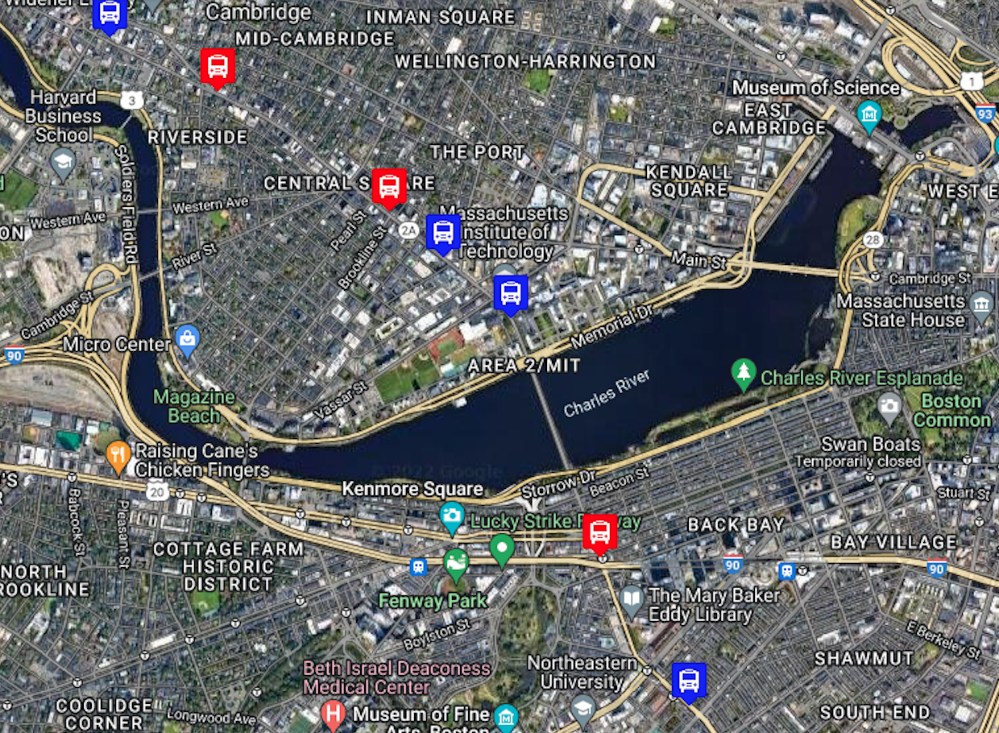

Home
Video
Projects
Books
Contact
PROJECTS
PacMen
Factory for making Pacmen and placing them randomly on the page.
Go To Repo
Eyes Following Cursor
Two eyes that will follow your cursor wherever it may go on the page.
Go To Repo

Live Bus Tracker
Real time bus tracker for the MBTA Bus 1 in Boston, between Nubian and Harvard.
Go To Repo